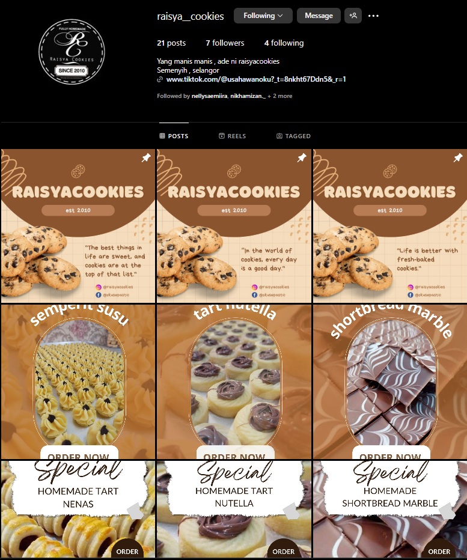

RAISYACOOKIES
COOKIES AND DESSERT
this project take times for 1 month where i build up a strategic instagram feed to boost their promotion and also make a content for engagement.
TIMELINE: 1 MONTH

INSTAGRAM
SOCIAL MEDIA ACT
I create high-quality, engaging social media content that helps businesses grow their online presence, boost brand awareness, and drive customer engagement. Every post, video, and campaign is strategically designed to maximize reach, increase audience interaction, and convert followers into loyal customers. By using data-driven strategies, trending hashtags, and compelling storytelling, I ensure content ranks well, stays relevant, and builds a strong digital community. My goal is to help brands stand out in a crowded digital landscape, increase visibility, and drive meaningful connections that lead to real business growth.
TIKTOK LIVE FOR RAISYACOOKIES
TIKTOK ACT
I go live on TikTok to help brands connect with their audience in real time, boost engagement, and drive sales. Live streaming isn’t just about being present—it’s about creating an interactive experience that builds trust, showcases products or services, and keeps viewers coming back. By using trending topics, strategic call-to-actions, and engaging storytelling, I maximize reach, increase visibility, and turn viewers into loyal customers. My goal is to make every live session impactful, authentic, and results-driven, helping brands stand out in the fast-paced world of TikTok.